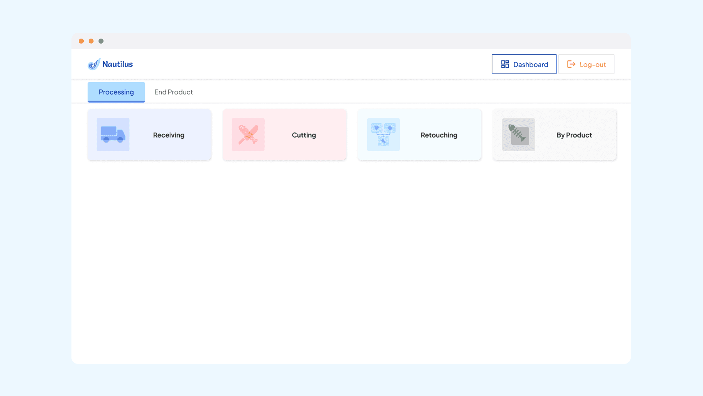
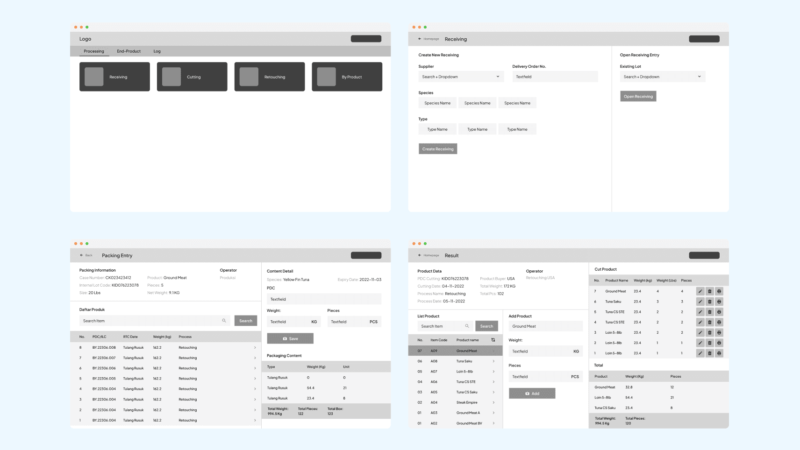
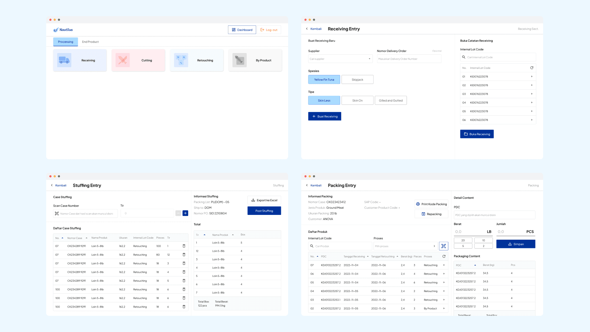
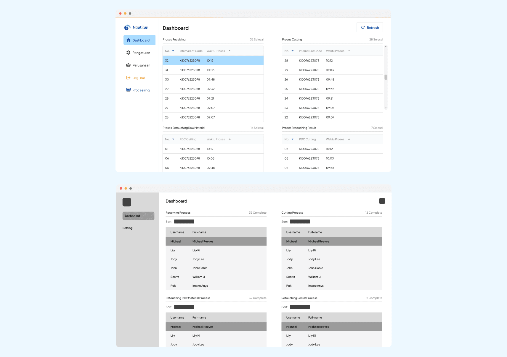

Intuitive Designs for Tuna and Meat Processing Solutions

OVERVIEW: PT. CHEN WOO FISHERY is a big factory company that produces Processed Tuna as their main product, this company had a couple sub-companies, and one of their sub-companies are NAUTILUS. A sub-company that created a product for factory processing, especially Tuna or any fish/meat processing factory company.
Problem
Tuna and meat processing operations at PT. Chen Woo Fishery's factory relied on manual, paper-based processes — a workflow that was difficult to digitize for an industry where speed and accuracy on the factory floor matter as much as the design itself.
Process
My role covered the full design lifecycle — research, defining design direction, collaborating with developers and managers, ideation, final UI output, and quality-checking the running product to make sure it actually held up in a real factory environment, not just on screen.
Outcome
From Paper-Based to Digital, Built for the Factory Floor
Delivered a product that ran stably in day-to-day factory operations, with positive feedback from the field on how easy it was to use.



